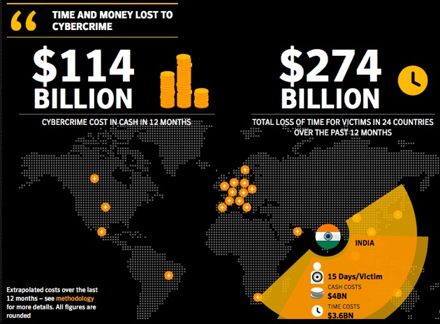

An Internet fraud is the use of Internet services or software with Internet access to defraud victims or to otherwise take advantage of them; for example, by stealing personal information, which can even lead to identity theft. A very common form of Internet fraud is the distribution of rogue security software. Internet services can be used to present fraudulent solicitations to prospective victims, to conduct fraudulent transactions, or to transmit the proceeds of fraud to financial institutions or to others connected with the scheme.
Internet fraud can occur in chat rooms, email, message boards, or on websites.
Types Of Frauds or Scams
Purchase fraud occurs when a criminal approaches a merchant and proposes a business transaction, and then uses fraudulent means to pay for it, using such as a stolen or fake credit card. As a result, merchants do not get paid for the sale. Merchants who accept credit cards may receive a chargeback for the transaction and lose money as a result. The most common fraud is taken place using credit cards this is when the account numbers and PIN numbers are obtained by malicious people.when a transaction is done and they use this information to withdraw money from this person.

Con artists often use the Internet to advertise supposed business opportunities that allow individuals to earn thousands of dollars a month in "work-at-home" ventures. These schemes typically require the individuals to pay nominal to substantial sums for the "business plans" or other materials. The fraudsters then fail to deliver the promised materials, provide inadequate information to make a viable business, or provide information readily available for free or a substantially lower cost elsewhere.
Money transfer fraud consists of an offer of employment transferring money to a foreign company, supposedly because it costs too much to do it through other methods.
With dating fraud, often the con artist develops a relationship with their victim through an online dating site and convinces the victim to send money to the fraudster. The requests for money can be a one-time event, or repeated over an extended period of time.
Although online dating has its dangers, three major dating services, eHarmony; Match.com and Spark Networks, have all agreed to take steps to keep their members safe from common online dating dangers. These steps include: checking registered members against the national sex offender data base, including ongoing tips and guides on how to meet that special someone in person in a safe way, ongoing tips and guides on how to safely interact with other members so as to avoid fraud and rapid abuse reporting systems so members can report abuse or suspected fraud as it happens, allowing the companies to take swifter action.
The scammer poses as a charitable organization soliciting donations to help the victims of a natural disaster, terrorist attack (such as the Sept. 11 World Trade Center attack), regional conflict, or epidemic. Hurricane Katrina and the 2004 tsunami were popular targets of scammers perpetrating charity scams; other more timeless scam charities purport to be raising money for cancer, AIDS or Ebola virus research, children's orphanages (the scammer pretends to work for the orphanage or a non-profit associated with it), or impersonates charities such as the Red Cross or United Way. The scammer asks for donations, often linking to online news articles to strengthen their story of a funds drive. The scammer's victims are charitable people who believe they are helping a worthy cause and expect nothing in return. Once sent, the money is gone and the scammer often disappears, though many attempt to keep the scam going by asking for a series of payments. The victim may sometimes find themselves in legal trouble after deducting their supposed donations from their income taxes. United States tax law states that charitable donations are only deductible if made to a qualified non-profit organization. The scammer may tell the victim their donation is deductible and provide all necessary proof of donation, but the information provided by the scammer is fictional, and if audited, the victim faces stiff penalties as a result of the fraud. Though these scams have some of the highest success rates especially following a major disaster, and are employed by scammers all over the world, the average loss per victim is less than other fraud schemes. This is because, unlike scams involving a large expected payoff, the victim is far less likely to borrow money to donate or donate more than they can spare.
Customers of dial-up Internet service providers, such as AOL, use a modem to dial a local telephone number in order to connect to the Internet. Some web sites, typically containing adult content, trick consumers into paying to view content on their web site by convincing them to unwittingly make international telephone calls with their modem.
Internet marketing and retail fraud is a fast-growing area perpetrated by dishonest internet marketing and retail sites involving a variety of products and services. The victim is tricked, by a legitimate-looking site and effective marketing, into giving their credit card information and [card security code] (or sending funds by other means) in exchange for what they believe to be goods or services. The goods never arrive, turn out to be fake, or are products worth less than those advertised.
A variation of Internet marketing fraud offers tickets to sought-after events such as concerts, shows, and sports events. The tickets are fake, or are never delivered. The proliferation of online ticket agencies, and the existence of experienced and dishonest ticket resellers, has fueled this kind of fraud. Many such scams are run by British ticket touts, though they may base their operations in other countries.